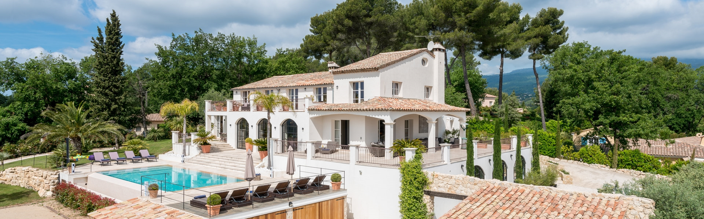
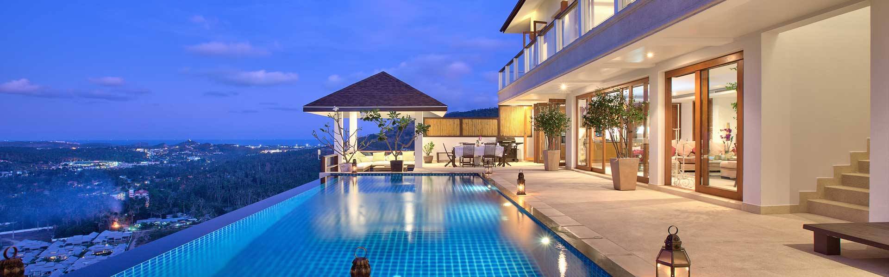

-

- 
- 
Dream Vila
Situată în partea de nord a stațiunii Mamaia, la 100 de metri de plajă și la 8 km de centrul stațiunii Mamaia, Villa La Mer Mamaia Nord oferă WiFi gratuit și parcare privată gratuită. Fiecare cameră are aer condiționat, minibar, uscător de păr, TV cu ecran plat și canale prin cablu și baie privată, dotată cu duș. Oaspeții se pot relaxa pe terasa proprietății și pot admira vederea la mare. Villa La Mer Mamaia Nord este situată la 5,7 km de plaja Fratelli din Mamaia și la 6,2 km de plaja H2O. Parcul acvatic Aqua Magic se află la 11,1 km de Villa La Mer Mamaia Nord și la 17 km de cazinoul din Constanța. Cuplurile apreciază în mod deosebit această locaţie. I-au dat scorul 8,5 pentru un sejur pentru 2 persoane. Această proprietate este de asemenea cotată pentru cel mai bun raport calitate/preţ în Mamaia! Clienții primesc mai mult pentru banii lor comparativ cu alte proprietăți din acest oraș. Vorbim limba dumneavoastră!
Facilitati:
- 3 bai
- 3 paturi
- bucatarie
Imprejurimi:
- Plaja Kudos 6,5 km
- Cazino Mamaia 9,6 km
- Debarcader Insula Ovidiu9,4 km
Recenzii:
#1
acum 3 zile„Totul a fost perfect ! Amplasare ok, personal prietenos si mereu disponibil sa te ajute, confort si curatenie ireprosabile, masa suficientt de diversificata si de calitate ! Recomand cu caldura !”
Paul.#2
acuma 4 zile„Foarte aproape de plaja, mic dejun variat, zona liniștita, terasa mare pe acoperis, camere cu balcon cu vedere la mare, superb. Exista în apropriere un Lidl si o benzinărie. Construcție noua 2017.”
Marius#3
acuma 5 zile„Gazda , liniștea confortul tot vom reveni cu siguranța fam Dudu”
Dudu.